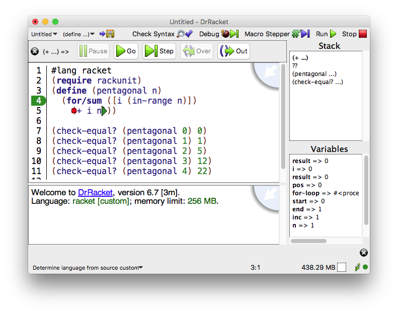

1.8 图形化的调试界面
提示: 在调试过程中改变一个文件的名称会使调试器无法在该文件上正常工作。
与 Run 按钮一样, Debug button 在定义窗口中运行程序。然而,它不是简单地从头到尾运行,而是让用户在程序执行过程中控制和观察。 该界面包括定义窗口上方的一个按钮面板,以及定义窗口本身的扩展。
程序在执行第一个表达式之前就开始暂停了。 在定义窗口中,这个表达式的左括号上有一个绿色的三角形表示。
1.8.1 调试器按钮
在执行暂停的时候,有几个按钮可用:
只有当执行在一个不在尾部位置的表达式的开始处暂停时, Over button 才会被启用。 它在表达式的末端设置一个一次性断点(用黄色圆圈表示),并使程序继续进行。 当执行到一次性断点时,它会暂停并删除该断点。
只有当执行在另一个表达式的上下文中暂停时, Out button 才会被启用。 与 Over 按钮一样,它设置一个一次性断点并继续执行。 在这种情况下,程序在返回上下文或引发一个未处理的异常时停止。
如果程序正在运行(没有暂停),那么只有 Pause 按钮会被启用。点击它将中断执行并暂停。 在这种情况下,当前的表达式可能只被大致知道,它将被表示为一个灰色的三角形。 上面描述的其他功能仍然可用。
在任何时候,都可以通过点击 Stop 按钮中断执行。 然而,与 Pause 按钮不同,停止的执行不能继续。
1.8.2 定义窗口操作
当执行被暂停时,定义窗口支持几个额外的动作:
将鼠标指针悬停在括号上可能会显示一个粉红色的圆圈。 如果是这样,点击右键或点击控制键(Mac OS)将打开一个菜单, 有 Pause at this point 或 Continue to this point 的选项。 前者在该位置设置一个普通断点;后者设置一个一次性断点并恢复执行。 普通断点显示为红圈,一次性断点显示为黄圈。
提示: 如果被调试的程序不是一个模块,那么在 第一次 被调试时,断点只会在表达式被评估时出现。 然而,在下次调试程序时,调试器会记住上一次调试时的可中断位置集。
提示: 调试结束后,点击 Run 按钮会使所有断点从定义窗口中消失。 这些断点不会被遗忘,再次点击 Debug 会恢复它们。 但是,断点 不 会在 DrRacket 重启时持续存在。
如果在表达式开始时暂停执行,那么在绿色三角形上单击右键或单击控制键(Mac OS)会打开一个菜单, 其中有一个选项 Skip expression... 。 选择这个选项会打开一个文本框,在其中输入表达式的值。 将跳过该表达式,并用输入的值替换它。
如果在表达式结束时暂停执行,则表达式及其值将显示在按钮栏的左侧。
右键单击或控制单击(Mac OS)绿色三角形会打开一个菜单,其中包含 Print return value to console 和 Change return value... 选项。 前者在交互窗口中显示返回值;后者打开一个文本框,在其中输入一个替代值。
将鼠标光标悬停在绑定变量上会在按钮栏的右侧显示变量的名称和值。
右键单击或控制单击(Mac OS)打开一个菜单, 其中包含 Print value of <var> to console 或 (set! <var> ...) 选项。 前者在交互窗口中显示变量的值;后者打开一个文本框,在其中输入变量的新值。
1.8.3 堆栈视图窗格
此外,暂停执行时,DrRacket 框架右侧的堆栈视图窗格处于活动状态。 窗格顶部显示活动堆栈帧的列表。 将鼠标移到一个框架上,会产生相应表达式的微弱的绿色高亮显示。 点击该框架可以选择该框架,从而使其词法变量可见。 被选中的框架用粗体字表示。
窗格的底部显示所选堆栈框架中的词法变量。
下面的屏幕截图说明了调试器界面的几个方面。 for/sum 主体中的红色圆圈是一个断点, (+ i n) 末端的绿色三角形是当前暂停执行的地方。 表达式的返回值显示在按钮栏的左边， i 和其他变量的值显示在堆栈视图窗格中。

1.8.4 调试多个文件
要调试一个跨越多个文件的程序,请确保所有的文件都在 DrRacket 中打开。 在包含主程序的窗口中点击 Debug 按钮。 当该程序加载其他窗口或标签中的其他文件时,会弹出消息框询问是否将该文件纳入调试会话。 包括该文件意味着可以在该文件中设置断点,检查变量,并进行单步操作。
提示: 一个文件在同一时间只能参与一个调试会话。 如果你试图调试一个加载了另一个已经在调试的文件,会弹出一个消息框,说明该文件不能被包含在另一个调试会话中。